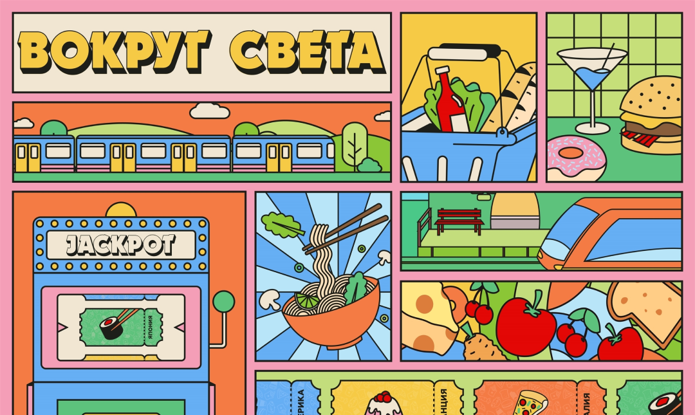

Содержание
Сайт и лендинг
Веб-плакат живёт в браузере. Лендинг живёт в браузере. Многостраничный сайт — тоже в браузере. Все три формата используют HTML, CSS и JavaScript. Все три могут содержать анимации, интерактив и скролл. Тогда в чём разница? Вопрос звучит просто, но именно он регулярно всплывает на студенческих просмотрах — когда преподаватель смотрит на работу и говорит: «Это классно, но это сайт, а не плакат». Давайте разберёмся, где проходят границы.
Задача лендинга
Лендинг всегда существует ради чего-то внешнего по отношению к себе. У него есть конкретная утилитарная цель — продать продукт, собрать контакты, привести человека на мероприятие, убедить оформить подписку. Каждый элемент на странице работает на эту цель: заголовок привлекает внимание, текст объясняет ценность, кнопка призывает к действию. В индустрии это называют конверсией — и именно конверсия определяет, хороший лендинг или нет.
Анна Комкова, одна из преподавателей Школы дизайна, описывает эту разницу достаточно точно: лендинг опирается на привычные паттерны взаимодействия с пользователем. Навигация, секции, call-to-action-кнопки, формы обратной связи — всё это элементы, которые пользователь ожидает встретить и понимает, как с ними работать. Лендинг спроектирован так, чтобы быть функционально прозрачным: человек попал на страницу, понял, что ему предлагают, совершил целевое действие.
У веб-плаката такой внешней задачи, как правило, нет. Он не продаёт, не собирает лиды, не информирует в утилитарном смысле. Его задача — создать визуальный опыт, передать авторское высказывание, вовлечь зрителя в исследование пространства. Если лендинг — это продавец, который ведёт вас к кассе, то веб-плакат скорее выставочный зал, где вы сами решаете, куда смотреть и что заметить.
Если убрать с вашей страницы все кнопки «Купить», «Подписаться» и «Узнать больше» — останется ли смысл? Если да, перед вами скорее плакат. Если страница без CTA теряет причину существования — это лендинг.
Текст как стержень
Ещё один формат, с которым веб-плакат пересекается по внешним признакам, — лонгрид. Оба существуют на одной странице, оба используют скролл для развития повествования. Но природа этого повествования принципиально разная.
Лонгрид выстроен вокруг текста. Визуальные элементы — иллюстрации, инфографика, видео — поддерживают текстовый нарратив, помогают его раскрыть, делают восприятие комфортнее. Уберите текст — и проект рассыпется.
В веб-плакате соотношение обратное. Визуальное решение самоценно, типографика работает как графический элемент, а текста в привычном смысле может быть совсем немного — или не быть вовсе. Анна Комкова формулирует это через понятие «визуального шума»: веб-плакат — это сконцентрированное количество анимаций и интерактивов на одной странице, где зритель исследует пространство, а не читает историю.

Сайт: система страниц
С многостраничным сайтом граница проходит ещё яснее. Сайт — это архитектура: система страниц, связанных навигацией. У него есть меню, разделы, вложенные страницы, переходы между автономными частями. Каждая страница выполняет свою функцию внутри общей системы.
Веб-плакат — это одна страница. Без меню, без разделов, без навигационной иерархии. Как отмечает Захар День, создатель формата, когда в студенческой работе появляется мультимодальная структура — несколько экранов внутри одной страницы, между которыми можно переключаться, — это уже не веб-плакат, а скорее сайт на полный экран (SPA — single page application). Формат заканчивается там, где начинается навигационная логика сайта.
Модальные окна и всплывающие элементы внутри веб-плаката допустимы пока они расширяют единое пространство. Но если их становится много и они начинают работать как отдельные скорее как отдельные страницы, плакат превращается в сайт.
А если это игра
Отдельный случай — граница с игрой. Некоторые студенческие работы тяготеют к игровым механикам: появляются счёт, уровни, логика победы и поражения. На просмотрах это регулярная тема для обсуждения.
Граница здесь проходит по характеру интерактивности. В веб-плакате интерактив работает на коммуникацию — он помогает раскрыть высказывание, добавляет слои восприятия, вовлекает в исследование. В игре интерактив становится самоцелью: фокус смещается с высказывания на развлечение. Если зритель думает «как пройти дальше?» вместо «что здесь происходит?» — формат, скорее всего, сместился.
Впрочем, граница бывает размытой, и это нормально. Веб-плакат — молодой формат, и точки пересечения с игрой, с сайтом, с интерактивной инсталляцией — это зоны, где он продолжает определять свои границы.

Чем похожи, чем отличаются
Лендинг решает внешнюю задачу и ведёт к конверсии. Лонгрид строится вокруг текста и развёрнутого повествования. Сайт — это архитектура из связанных страниц. Игра ставит развлечение и прохождение в центр опыта.
Веб-плакат — это завершённое авторское высказывание на одной странице, где визуальное решение самоценно, а интерактивность поддерживает коммуникацию со зрителем. У него нет утилитарной цели, навигационной структуры и текстового нарратива как стержня — зато есть свобода экспериментировать с тем, как код, композиция и взаимодействие могут работать вместе.